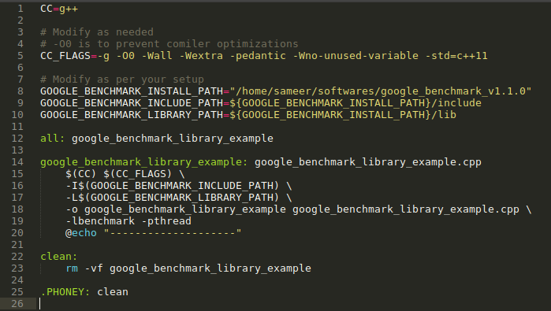
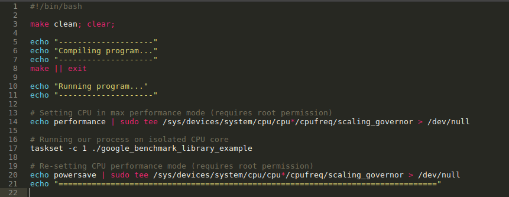
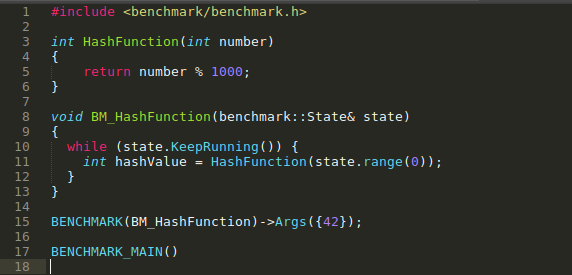
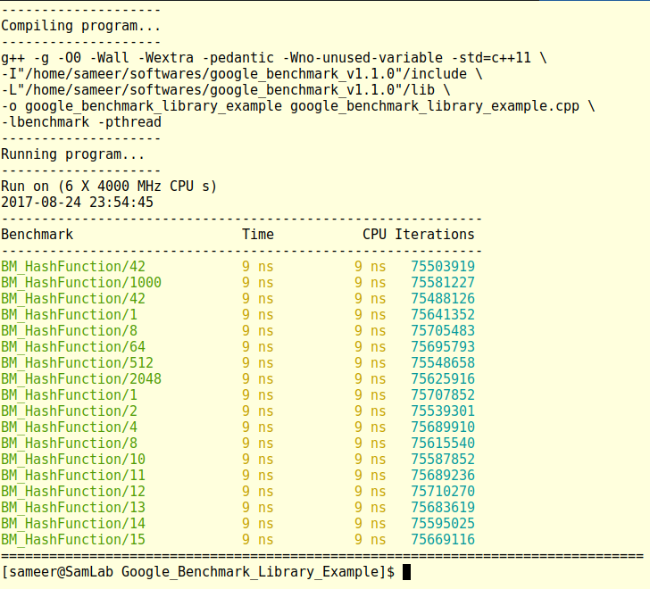
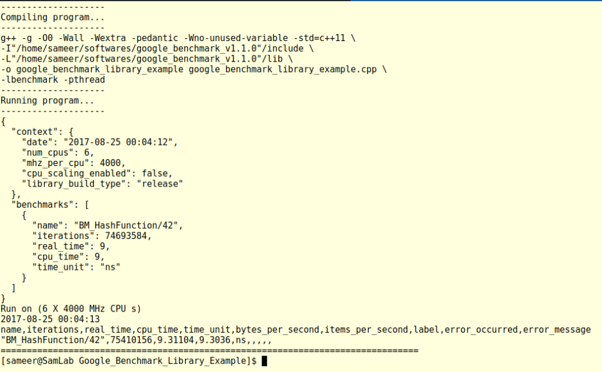

Using Google ‘Benchmark’ library to micro-benchmark in Makefile project
In last tutorial we have seen how to install the Google Benchmark library on Linux system. What I didn't mentioned in last article is that it's an "micro-benchmark support library". It means that it is better to use the library to benchmark specific operations/part of code in isolation just like unit-testing.
What the library does is it executes the code (or function) which we want to benchmark, repeatedly very large number of times (iterations are decided on the CPU time taken by operation) and provides us the time it took for completing the operation. This type of benchmark is very useful for the operations or section of code which is getting executed multiple times and very frequently in your application.
The same applies to the functions provided by different libraries that we include in our application.
For example we use various containers like std::vector, std::list, etc. provided by the standard library. They can be used in different ways. We can use a std::vector without hinting any initial size or we can reserve size for some minimum number of elements.
Bench-marking behavior of their usage styles at such granular level can have major impact on applications overall performance.
If purpose of micro-benchmarks is still not clear there is a nice video about it by Chandler Carruth which you can look at: CppCon 2015: Chandler Carruth Tuning C++: Benchmarks, and CPUs, and Compilers! Oh My!
In this tutorial we will look at how to use the Google benchmark library using a simple project managed using Makefile. I am aware of other build-systems available like CMake, SCons but for simplicity we will use a hand written Makefile.
Benchmark Environment
CPU : Intel® Core™ i7-5820K CPU @ 3.30GHz × 6 (Max 4.00 GHz, NUMA Architecture)RAM : 8 GB @ 2133 MHz (2 x 4 GB)
Operating System : Fedora 25 (Kernel 4.11.12-200.fc25.x86_64)
GCC Version : v6.4.1
Google Benchmark Library Version : v1.1.0
Other : Hyper-threading is turned off. Out of 6 available CPU cores, Core-0 and Core-1 are isolated.
Project structure
The sample project's folder structure is as follows:
|--- google_benchmark_library_example.cpp
|--- Makefile
|--- run.sh
We will start by listing minimal code required for benchmark. The final code is given at the end and also available at https://github.com/sameermahant/Google_Benchmark_Library_Example
Makefile description
This is used to compile the source code and produce executable. "GOOGLE_BENCHMARK_INCLUDE_PATH" and "GOOGLE_BENCHMARK_LIBRARY_PATH" are related to benchmark library. Also note "-lbenchmark -pthread" included in compilation which are required for benchmark library.
This setup is enough to get started with bench-marking, but we will create a utility bash script which will help us to make and run resulting executable in different configurations.
run.sh description
This utility script compiles the code, set processor frequency required for max performance and runs our code on an isolated CPU. Setting up the processor frequency and isolating the core are not the topic of this tutorial, may be I will cover these topics in some other article.
In short setting the CPU to its maximum performance mode and telling the OS to reserve specific core of CPU to only our process gives the most consistent results.
In above file 'taskset -c 1' is used to execute process on Core-1.
google_benchmark_library_example.cpp description
The source code is present in 'google_benchmark_library_example.cpp'. Notice the '#include <benchmark/benchmark.h>' statement. This is required as it contains the function declaration provided by the library.
NOTE: Though I am using v1.1.0 of library for demonstration purpose I have not used "#include <benchmark/benchmark_api.h>" as comments in the file 'benchmark_api.h' for v1.2.0 suggest it is going to be deprecated in future versions and will be replaced by 'benchmark.h'.Lets take an example of hash table data structure (assume it has 1000 slots). They are used for faster data lookups having complexity O(1). So how can we make it more efficient?
One of the frequently used part in this data structure is Hash functions which is used to hash the input value. Above code has one such simple HashFunction() which we will benchmark and try to improve it.
Before that we will go through library functions provided to do benchmark and how to use them.
For bench-marking our function we need a wrapper function which will contain the necessary code that benchmark library executes to provide result. In above code BM_HashFunction() is that wrapper function. It takes reference of benchmark::State type which contains necessary information like inputs, time information, running state's i.e. started or finished, etc.
Inside BM_HashFunction() we have a while loop whose execution is handled by library.
We call this wrapper function with BENCHMARK() macro. We also provide input to our hash function using the facility provided by the library.
We have different options to provide input like Single, Range, Custom.
To provide single input we use following:
To provide multiple input we can repeat Args() as following:
We also have the range function which will generate set of values for us with default or custom multiplier:
BENCHMARK(BM_HashFunction)->RangeMultiplier(2)->Range(1,2048);
To provide custom inputs we can write our own function and use it as follows:
Here CustomArguments() is a function which will provide input to our benchmark.
The arguments provided to the benchmark function are consumed in wrapper function using state.range(0).
Let's compile the code and run it. Will it compile?
If you have closely observed the source code you have noticed that we don't have main() function which is necessary and entry point of C++ program. This is taken care by BENCHMARK_MAIN() macro which create main() for us with necessary setup to initialize library components.
As we have our setup ready, running the benchmark is just executing the run.sh and observing the results.
Following is a sample results:
In output we get the function name, its input value, time taken for it and number of iterations the given operation is executed.
The output lists the time in nanoseconds by default but we can change that to microseconds or milliseconds as follows:
BENCHMARK(BM_HashFunction)->Args({42})->Unit(benchmark::kMicrosecond);
BENCHMARK(BM_HashFunction)->Args({42})->Unit(benchmark::kMillisecond);

We can also change the output format from console (default) to json or csv. It is done by providing the command line option '--benchmark_format' while executing the program.
taskset -c 1 ./google_benchmark_library_example --benchmark_format=json
taskset -c 1 ./google_benchmark_library_example --benchmark_format=csv

We covered how to run the benchmark and get the output. Now let's take a look at how we can use this knowledge to improve our hash function.
We have assumed that our hash table has 1000 slots. So in our hash function we are returning number % 1000.
Let's check what happens if we increase number of slots to 1024. Results remains the same (As it should be).
So why 1024? The only operation in our function is modulus (%). So to improve our function what we can only do is improve / replace modulus operation.
We know that the modulus operation with any number which is power of 2 can be done using following method:
Let P represent the number which is in power of 2 (like 2, 4, 8, 16, ...). Let n is the number on which we want to perform modulus operation. Then n % P = n & (P - 1). In our HashFunction() we will use it as 'number & 1023'.
See the results (Notice time reduced from 9ns to 8ns):
We can clearly see that by sacrificing very little memory we got some improvement. It seems very little improvement but a small improvement in critical code can have effect on overall application. Specifically application demanding low latency, collection of such small improvements can create big impact.
The complete code is given below. I have also made it available at "https://github.com/sameermahant/Google_Benchmark_Library_Example" which you can use as sample/template to get started just by modifying some code/function as per requirement. Feel free to copy/clone it.